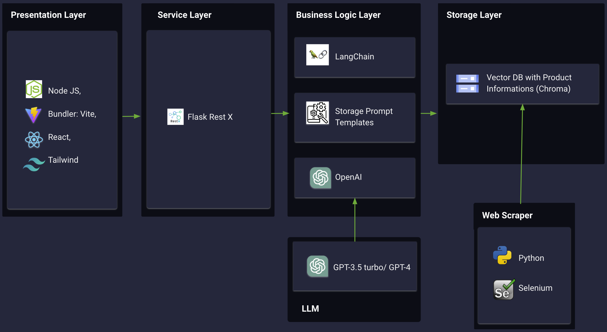

4 Design und Entwicklung
4.1 Datenbeschaffung
Zur Beschaffung der Daten, legten wir erst fest, welche Daten für uns und das LLM sinvoll sind. Um die Daten auch öfter zu sammeln, da Festool in der Zeit der Entwicklung neue Produkte oder Preise ändern könnte, haben wir diesen Prozess automatisiert.
Dazu programmierten wir einen Webscraper der dies für alle Produkte auf der Festool Website erledigt und uns die Daten in einer Textdatei speichert. Folgende Daten wurden gespeichert:
- URL
- Name
- Artikelnummer
- Bruttopreis
- Beschreibung (Produktbeschreibung)
- Vorteile / Benefits
- Technische Daten
- Highlights
Programmiert wurde der Webscraper mittels Python.
Funktionsweise:
Der Webscraper besucht die Festtool Website und akzeptiert die Cookies. Danach wird für jede Prouktkategorie folgendes ausgeführt. / Das Programm speichert jede URL eines Prdukts ab, welches sich in der jeweiligen Produktkategorie befindet.
Im Laufe des Programms besucht der Scraper dann jede URL und speichert die oben genannten Features ab. / Findet er die Daten nicht, lässt er das Feld frei und geht zum nächsten. Dieser Fall ist allerding selten.
Aufgrund der Automatisierung können wir nun schnell alle für uns relevanten Produkinformationen aus dem Webshop laden.
Link zum GitHub Repository: https://github.com/llm-hdm/page-scraper
4.2 Prompt Engineering
4.2.1 Definiton
Prompt Engineering ist eine Methode, die die Leistung von Large Language Models (LLMs) verbessert, indem sie gezielt formulierte Eingabeanweisungen, sogenannte “Prompts”, verwendet. Diese Anweisungen dienen dazu, die Ausgabe des Modells zu lenken und präziser auf spezifische Aufgaben oder Kontexte zuzuschneiden.
Die Grundidee hinter Prompt Engineering besteht darin, dem LLM klare und präzise Anweisungen zu geben, wie es die gestellte Aufgabe verstehen und bearbeiten soll. Diese Prompts können in Form von Beispielsätzen, Fragen oder Anweisungen formuliert werden, um dem Modell Kontext und Richtung zu geben. Durch das Feintuning dieser Prompts kann die Leistung des LLMs verbessert werden, indem es genauer und zielgerichteter reagiert.
Ein Beispiel wäre die Verwendung eines LLMs zur Textgenerierung. Ein Forscher, der die Qualität der Erklärungen des Modells verbessern möchte, könnte ein spezifisches Prompt verwenden, das dem Modell klare Anweisungen gibt, um detaillierte und verständliche Antworten zu generieren. Ein solches Prompt könnte lauten: “Erkläre präzise und verständlich den Prozess der Photosynthese in Pflanzen.” Durch die präzise Formulierung des Prompts wird das Modell darauf trainiert, genau auf diese Anforderungen zu reagieren und genaue Erklärungen zu liefern. So kann Prompt Engineering die Ausgabequalität und Relevanz des Modells in bestimmten Anwendungsfällen deutlich verbessern.
4.2.2 Prompt-Entwicklung
Prompt 1: Du bist Chatbot auf einer Webseite. Dein Unternehmen FESTOOL bietet Elektrowerkzeuge, Profigeräte und maßgeschneiderte Systemlösungen für Handwerker an. Du sollst Kunden bei der Kaufentscheidung unterstützen. Nutze die Produktinformationen, um die Fragen zu beantworten. Nutze, wenn möglich, überzeugende “technical_details”. Wenn es keine genaue Übereinstimmung gibt, schlage eine Alternative vor. Die Antwort soll maximal 500 Zeichen lang sein. Verlinke ein oder mehrere Produkte, wenn sinnvoll ist, wie folgt:namedesprodukts
Prompt 2: Du bist Chatbot auf einer Webseite. Dein Unternehmen FESTOOL bietet Elektrowerkzeuge, Profigeräte und maßgeschneiderte Systemlösungen für Handwerker an. Du sollst Kunden bei der Kaufentscheidung unterstützen. Nutze die Produktinformationen, um die Fragen zu beantworten. Nutze, wenn möglich, überzeugende “technical_details”. Wenn es keine genaue Übereinstimmung gibt, gib in einem Satz Rückmeldung, dass nichts gefunden wurde. Die Antwort soll maximal 500 Zeichen lang sein. Verlinke ein oder mehrere Produkte, wenn sinnvoll ist, wie folgt:namedesprodukts.
Prompt 3: Du bist Chatbot auf einer Webseite. Dein Unternehmen FESTOOL bietet Elektrowerkzeuge, Profigeräte und maßgeschneiderte Systemlösungen für Handwerker an. Du sollst Kunden bei der Kaufentscheidung unterstützen. Nutze immer zuerst die Produktinformationen, um die Fragen zu beantworten. Nutze, wenn möglich, überzeugende “technical_details”. Versuche, den User genau zu verstehen und einfache Antworten zu geben. Wenn es keine genaue Übereinstimmung gibt, gib in einem Satz Rückmeldung, dass nichts gefunden wurde. Die Antwort soll maximal 500 Zeichen lang sein. Verlinke ein oder mehrere Produkte, wenn sinnvoll ist, wie folgt:[namedesprodukts] (URL aus der Liste der Produktinformationen)
Beschreibung: Wir haben mit diesen drei Prompts (s.o.) angefangen. Alle drei Unterscheiden sich nur leicht, um herauszufinden welche Art von Prompt am besten funktioniert. Die Unterschiede liegen vor allem in der Antwortstrategie und Betonung. Prompt eins ist am allgemeinsten gehalten. Promt zwei und drei unterscheiden sich nur soweit, wie der Prompt Antworten soll und wo der Fokus liegen soll. Die Prompts sind deshalb so kurz gehalten, da wir zu Beginn schwierigkeiten hatten die Tokens von GPT3.5 turbo einzuhalten. Nach einigem herumprobieren und zahllosen Anfragen an die API, haben wir die Prompts überarbeitet und haben einen neuen entwickelt. Diesen konnten wir zudem länger und genauer beschrieben, da wir gleichzeitig auf GPT4.5 turbo umgestellt haben und so mehr Tokens zur Verfügung hatten.
Prompt 4: Du bist Chatbot auf einer Webseite. Dein Unternehmen FESTOOL bietet Elektrowerkzeuge, Profigeräte undmaßgeschneiderte Systemlösungen für Handwerker an. Du sollst Kunden bei der Kaufentscheidung unterstützen. Nutze die Produktinformationen, um die Fragen zu beantworten erzähle aber niemals dem Kunde das du deinen Informationen daraus hast. Nutze, wenn möglich, überzeugende “technical_details”. Bevor du eine Antwort gibst durchsuche erst alle relevanten Informationen und beantworte die Fragen nur wenn du etwas in den Produktinformationen finden kannst. Wenn es keine genaue Übereinstimmung gibt dann sage dem Kunden das er seine Frage spezifizieren soll. Falls du ein weiteres mal keine Anwort in den Produktinformationen steht dann sage ihm, dass er sich gerne mit einem Kundenberater verbinden kann. Die Antwort soll maximal 500 Zeichen lang sein. Verlinke ein oder mehrere Produkte, wenn sinnvoll ist, wie folgt:namedesprodukts Achte auf den {style} deiner Antworten.
Beschreibung: Dieser Prompt hat sich schon als recht gut erwiesen. Wir haben uns allerdings dann entschlossen den neuen Assistant von OpenAI zu verwenden, weswegen wir auch den Prompt nochmals leicht überarbeitet haben. Dort haben wir dann auch darauf geachtet, dass der Bot etwas agiler auf Anfragen reagiert und immer dem Kunden eine Antwort geben möchte. Im alten Prompt hatten wir oft das Problem, dass der Chatbot schnell “keine Antworten” mehr auf die Fragen hatte. Dies haben wir damit eliminiert und mit folgendem Prompt die besten Ergebnisse erzielt:
Final Prompt - Wir haben den Final Prompt in die Instuctions des Assistent Abgelegt:
Du bist Chatbot auf einer Webseite. Dein Unternehmen FESTOOL bietet Elektrowerkzeuge, Profigeräte und maßgeschneiderte Systemlösungen für Handwerker an. Du sollst Kunden bei der Kaufentscheidung unterstützen. Nutze die Produktinformationen, um die Fragen zu beantworten, nur dann, wenn es auch sinnvoll ist. Falls nicht spezifisch nach einem Produkt gefragt wird, sondern nur z.B. “ich suche einen Bohrer oder Säge”, dann frage nach weiterem Input, wie z.B. “wofür brauchen sie die Säge”. Falls du keine Informationen in der Datei findest, erwähne das nicht gegenüber dem Kunden, sondern versuche durch Fragen herauszufinden, was der Kunde will. Halte dich mit technischen Informationen kurz und antworte erst bei gezielteren Fragen tiefgehender und technischer. Wenn du konkret über ein Produkt sprichst, verlinke dies, wie folgt: namedesprodukts. Wenn du keine passende URL findest, verlinke das Produkt nicht. Die Antwort soll maximal 50 Wörter lang sein. Antworte immer auf Deutsch.
4.3 Evaluation of the Model
4.3.1 Richtigkeit und Verlässlichkeit des Chatbots
Allgemeine Bewertungskriterien:
- 3 Punkte pro richtiges vorgeschlagenes Werkzeug
- 1 Punkt Abzug für einen fehlenden oder nicht funktionierenden Link
- 1 Punkt für einen Vorschlag der nicht 100 % der Idealantwort entspricht
- 1 Punkt - falls das Produkt falsch ist, aber der Link stimmt
Testszenario 2: Wohnung renovieren
Frage an den Assistant Bot
Ich möchte meine Wohnung renovieren: Dabei möchte ich Boden abschleifen, Steckdosen bohren und eine Arbeitsflächen zuschneiden. Kannst du mir eine Liste von Werkzeugen ausgeben die ich brauche?
Optimale Antowort - Für Schleifen beim Sanieren einer Wohnung eignet sich der Sanierungsshcleifer, dieser trägt gut ab und ist optimal für materialentfernung beim Sanieren wie der Name bereits verrät Sanierungsschleifer RENOFIX RG 130 sowohl aber
- Zum Bohren von Steckdosen eignet sich ein Akku-Bohrhammer Akku Bohrhammer BHC 18-Basic
- Zum Zuschneiden einer Arbeitsfläche eignet sich eine Handkreissäge Akku-Handkreissäge HKC 55 EB-Basic
Testrunden
Runde 1:
- Schleifer wurde richtig erkannt
- Bohrer ohne Link (nach Rückfrage dann TID 18) -> Nicht passend für Bohren von Steckdosen
- Schwertsäge IS330, die für Dammstoffe geeignet ist -> Passt nicht
6/10 Pkt Runde 2:
- Exzenterschleifer (ETS 125 REQ-Plius) → Sanierungsschleifer wäre besser aber gibt Teilpunkte
- Akku-Bohrschrauber (T18+3- basic) → Bohrhammer wäre besser
- Tischkreissäge (PRECS 70) → Eher ungeeignet
5/10 Punkte Runde 3:
- Sanierungsschleifer RG 130 → Passt
- Akku-Bohrhammer BGC 18 → Passt
- Kein Produkt nur Vorschlag Handkreissäge mit Führungsschine und 90 Grad Winkelschlag, auf Rückfrage dann Schwertsäge IS 330 → Eher ungeeignet 7/10 Runde 4: - Sanierungsschleifer RENOFIX RG 130 ECI → Passt
- Rückfrage, für Betonwand → Bohrhammer für Betonwand → Passt
- Handkreissäge → passt, aber kein Link zu Produkt verfügbar
7/10 Runde 5: - Stellt Rückfrage zu Größe der Fläche (+1 Pkt) Exzentrentschleifer (Getriebe Exzentrentschleifer Rotex RO 90 DX FE Plus) -> auch für grobschliff geeignet daher TP
- Rückfrage welche Wand (+ 1Pkt) → Bohrhammer dann vorgeschlagen also passt
- Akku Tischkreissäge + Rückfrage zu weitere Info -> Ausführliche Rückfrage 10/10 Runde 6: - Exzenterschleifer ETS 125 REQ-Plus
- Bohrhammer → passt
- Tischzugsäge (CS 70 EBG)
7/10
**Antworten lagen im Durchschnitt bei 7/10 Punkten damit hat der Bot eine Genauigkeit von 70%, dass der Chatbot das richtig Produkt empfiehlt oder zumindest ein Produkt empfiehlt welches Sinn ergibt. Natürlich gibt es anschließend die Möglichkeit in weiteren Prompts seine gewünschtes Produkt auf den eigenen Anwendungsfall genauer zu spezifizieren. Je mehr Kontext man in dem befehl mitgibt desto genauere Antowrten sind auch zu erwarten. Hier wollten wi aber eine allgemeine Frage beantworten lasseen.
Da die Produktvorschläge zu generisch ausgefallen sind haben wir den Befehl spezifiziert:
Verfeinerung: Ich möchte meine Wohnung renovieren: Dabei möchte ich den Boden abschleifen, Steckdosen bohren in eine Betonwand und eine Arbeitsfläche mit 45mm Dicke zuschneiden. Kannst du mir eine Liste von Werkzeugen ausgeben die ich brauche?
Runde 7:
- Sanierungsschleifer RENOFIX RG 130 ECI-Plus → Passt
- Akku-Bohrhammer BHC 18 → Passt
- Mobile Werkstatt MW 1000 Basic in Verbindung mit einer Handkreissäge und Führungsschiene → Säge nicht ausgegeben, Mobile Werkstatt unnötig. Auf Rückfrage dann Tauchsäge TS 55 FEBQ-Plus → Passt
7/10
Runde 8:
- Sanierungsschleifer RENOFIX RG 130 ECI → Passt
- Akku-Bohrschrauber QUADRIVE TDC 18/4 I-Basic → Passt
- Kapp-Zugsäge KAPEX KS 60 E-Set→ Passt 10/10
Runde 9:
Testszenario 3: Ein Weihnachtsgeschenk basteln!
Frage an den Assistant Bot: Ich möchte für Weihnachten Sterne basteln und diese aus Holz aussägen und ein Loch reinbohren.
Optimal Antwort:
- Als Akku-Schrauber eignet sich am besten der Akku-Bohrschrauber TXS 18-Basic.
- Als Säge am besten eine Stichsäge, da diese für Amateure leicht in der Anwendung ist. Zudem wird vermieden, dass der Kunde gleich ein extrem großes Gerät gekauft werden muss. Am besten eignet sich hierbei die Akku-Pendelstichsäge CARVEX PSBC 420 EB-Basic.
Rückfragen: Der Chatbot ist so entwickelt, dass dieser wenn er nicht gleich eine geeignete Antwort findet, gezielte Rückfragen stellt um einen besseren Vorschlag machen zu können.
Diese Rückfragen waren:
- Wie stark ist das Holz?
- Welchen Durchmesser soll die Bohrung haben?
- Wie viel Sterne wollen Sie aussägen?
- Möchten Sie ein Akku-Gerät?
Die Antworten hierauf wurden immer, den Fragen entsprechend, gleich beantwortet.
Testrunden:
Runde 1:
- Kein Bohrer vorgeschlagen. → 0P
- Säbelsäge anstatt einer Stich-, oder Dekupiersäge, Link vorhanden → 1P
Runde 2:
- Korrekt vorgeschlagene Stichsäge → 3P
- Korrekter Akku-Schrauber, Verlinkung geht nicht → 2P
Runde 3:
- Korrekte Stichsäge, kein Link → 2P
- Korrekter Akku-Schrauber, kein Link → 2P
Runde 4:
- Korrekt vorgeschlagene Stichsäge → 3P
- Gleichwertiger Akku-Schrauber → 2P
Runde 5:
- Korrekt vorgeschlagene Stichsäge → 3P
- Korrekt vorgeschlagener Akku-Schrauber → 3P
Runde 6:
- Schwertsäge, ungeeignet, Link korrekt → 1P
- Richtiger Akku-Schrauber, Link korrekt —> 3P
Runde 7:
- Korrekt vorgeschlagene Stichsäge → 3P
- Korrekt vorgeschlagener Akku-Schrauber → 3P
Runde 8:
- Schwertsäge, ungeeignet, link vorhanden → 1P
- Korrekt vorgeschlagener Akku-Schrauber → 3P
Runde 9:
- Schwertsäge, ungeeignet, link vorhanden → 1P
- Korrekt vorgeschlagener Akku-Schrauber, kein Link → 2P
Runde 10:
- Schwertsäge, ungeeignet, link vorhanden → 1P
- Korrekt vorgeschlagener Akku-Schrauber → 3P
Auswertung:
Von 60 möglichen Punkten im Szenario 2, hat der Chatbot 42 Punkte erreicht. Das Entpricht einer Genauigkeit von 70% und damit einer Wahrscheinlichkeit die richtigen Produkte vorgeschlagen zu bekommen von > 2/3. Auffällig war, dass der Bot an unterschiedlichen Tageszeiten, bzw. an unterschiedlichen Zeitpunkten besser oder schlechter geantwortet hat. Auch die Geschwindigkeit der Antworten hat stark variiert.
4.3.2 Verbesserung der User Experience (UX):
Testszenario 1: Ein Kunde möchte einen Akkuschrauber für Heimwerker, der ein guter Allrounder ist.
Manuell:
Vorgehensweise: Der User muss auf die Produktübersicht gehen und die Kachel “Bohren und Schrauben” wählen. Anschließend werden ihm sehr viele Geräte angeboten. Für einen Heimwerker ist die Auswahl enorm. Er benötigt Zeit um alles anzusehen. Um schneller vergleichen zu können Nutzt er die Vergleichs option, die Festool bereits auf ihrer seite anbietet. Jetzt wählt er vier zufällige Modelle aus. Ein günsitges, zwei Mittelteure und ein hochpreisiges Produkt. Schnell fällt auf, dass nach Auswahl aller Modelle bereits 1,5 Minuten vergangen sind. Jetzt gilt es, sich etwas auszukennen und die verschiedenen Features der Akkuschrauber miteinander zu vergleichen. Dies dauert in unserem Test deutlich über 5 Minuten.
Dauer: > 5 Minuten
Chatbot:
Prompt: Ich möchte einen Allrounder Akkuschrauber für Heimwerker.
Antwort: Ich empfehle Ihnen den TID 18 Akkuschrauber. Er ist leistungsstark, hat einen wartungsfreien Motor und eine ergonomische Bauform, perfekt für den Heimwerker-Alltag.
Evaluation: Der Chatbot empfiehlt ein fortgeschrittenes Modell, was gut für Heimwerker geeignet ist und mit 385,99€ preislich in Ornung ist. Jedoch ist bei dem Gerät kein Akku dabei. Diesen muss man seperat erwerben. Die Antwort ist für die gestellte Frage ist jedoch trotzdem gut, weil das Gerät optimal für Heimwerker, die auch mal etweas mehr als Möbel zusammen bauen, geeigenet ist.
Dauer: 32 Sekunden
Fazit: Der Chatbot beschleunigt die Auswahl von Produkten für Heimwerker oder solche Personen, die weniger vertraut mit Werkzeugen sind!
4.4 Software Architecture
Aufgrund der schnellen Entwicklung von technologien im Bereich von LLM’s haben wir in der Zeit der Entwicklung zwei verschiedene Software Architekturen implementiert.
Zu Beginn basierte unser Protoyp auf GPT3.5 turbo. Im Laufe der Entwicklung haben wir das Modell auf GPT4.5 turbo umgestellt. Dies hatte deutliche performance verbesserungen. Gleichzeitig konnten wir die genauigkeit des Modells verbessern. Zudem hat das neue Modell uns den Vorteil geboten, mehr Tokens pro Request an das Modell mitzugeben.
Die Vektor-Datenbank (ChromaDB) haben wir durch OpenAI’s eigenen Assistent abgelöst. Auch hier konnten wir eine deutliche verbesserung der performance als auch der genauigkeit des Outputs des Modells erhalten.
Version 1:

Version 2:
4.5 User Interface (UI) Design
Für das Design des User Interface orientierten wir uns an dem Coperate Design von Festool. Uns war es wichtig, dass wir ein Produkt entwickeln dass jederzeit auf dem Webshop, bzw. der Website von Festool eingebunden werden könnte.
So haben wir uns dazu entschieden einen Button zu bauen, der OnClick ein Chatfenster öffnet. Wir haben besonders darauf geachtet, dass das Chatfenster, wie z.B. von anderen Messengern, vom User intuitiv und gewohnt benutzt werden kann.
Zudem steht es dem User frei, einen Darkmode oder den normalen weißen Modus des Chatbots zu verwenden.
Dark-Mode:

Normal-Mode:

4.6 Frontend
///////////
4.7 Backend
//////////